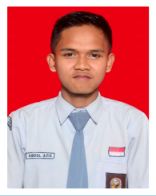
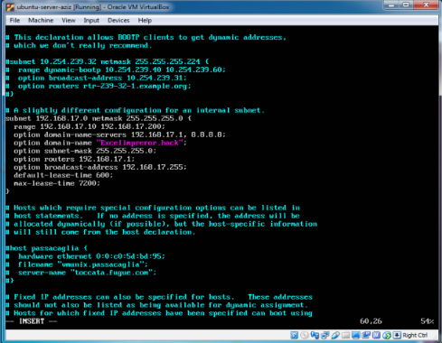
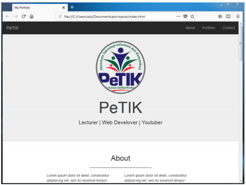
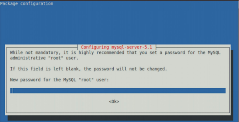

Curriculum Vitae |
|||||
|---|---|---|---|---|---|
|  | Nama | : | Abdul Aziz | ||
| TTL | : | Sukabumi , 4 Juli 1999 | |||
| Nohp | : | 089669001989 | |||
| : | azizmentor96@gmail.com | ||||
| Website | : | Inspirasi | |||
| Alamat | : | Jl. Raya Puspiptek-Pembangunan, Kp. Cikarang Rt.01/07 Pabuaran, Gunung Sindur - Bogor 16340 | |||
Pendidikan |
|||||
|
|||||
Keahlian |
|||||
NetworkingTCP/IP – LAN – Server (Gateway, DHCP, DNS, Web, Mail, Proxy) – Firewall ProgramingPHP – Yii Framework – Codeigniter – Java Web – Android Web DesignHTML – CSS – Java Script – Boostrap ComputerHardware – Software – Troubleshooting Aplikasi PerkantoranMicrosoft Office (Word, Excel, Powerpoint) – Libre Office (Writer, Calc, Impress) Desktop PublishingAdobe (Photoshop, Premiere, Flash) – Corel Draw – Inkscape LinuxLinux Network Andministrasi – Linux System Administrasi BahasaIndonesia – Inggris Soft SkillDisiplin, Jujur, Pekerja Keras, Pembelajar, Percaya diri, Mandiri, Bisa bekerja secara individu atau tim, pantang menyerah |
|||||
Pengalaman |
|||||
Belajar Penerapan DHCP ConfigurationBelajar Membuat Aplikasi Web dan BoostrapBelajar Instalasi Mysql Server-ClientOrganisasi
Prestasi Akademik
Pelatihan / Seminar
Project yang pernah di buat
|
|||||
Kontak |
|||||